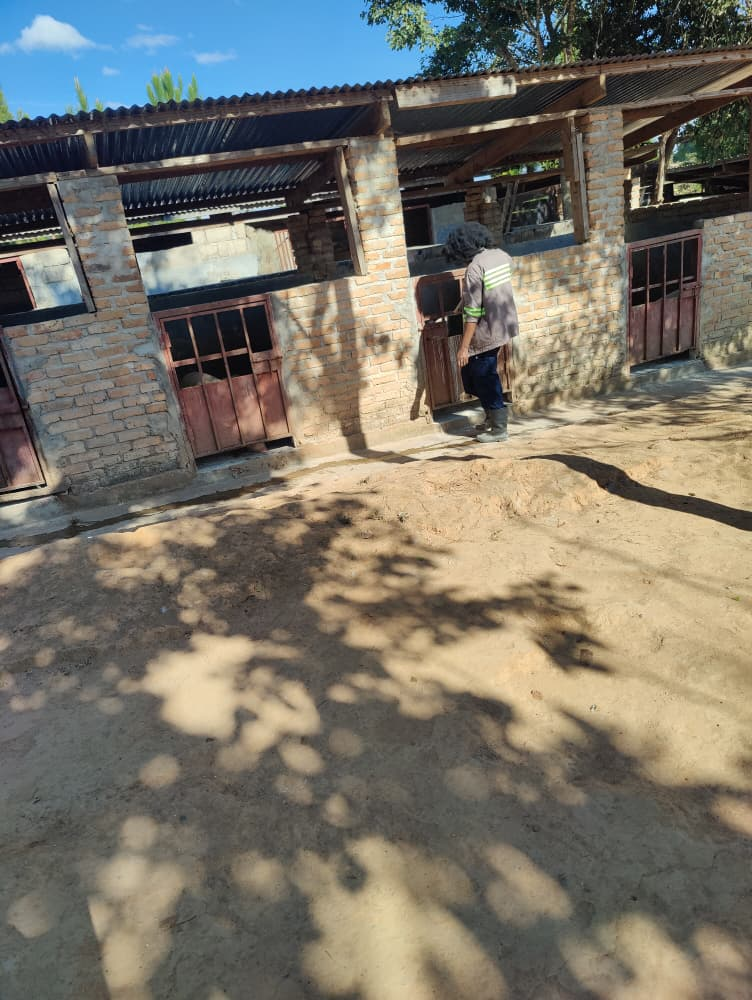
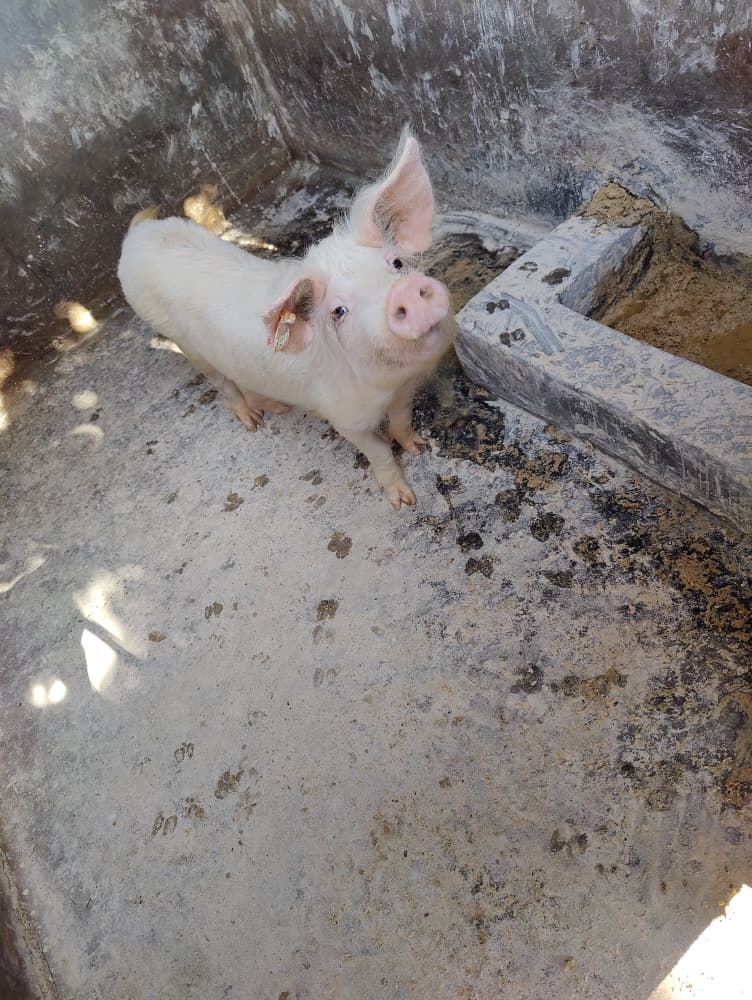

Our Black Soldier Fly setup is established
Abiti now has an established BSF setup. Next, we are exploring larvae as a supplementary feed ingredient and frass as a soil amendment. Read more
Home / Gallery
Genuine photos from around the farm, and the latest news from Abiti.






Photos of Azolla development and of community and farmer engagement, plus farm videos, will be added as these activities develop.
News and updates
New developments, harvests, achievements and farm activities.
Abiti now has an established BSF setup. Next, we are exploring larvae as a supplementary feed ingredient and frass as a soil amendment. Read more
We are developing Azolla as a potential supplementary feed for our fish and livestock. This is work in progress, and we will post updates as it develops. Read more